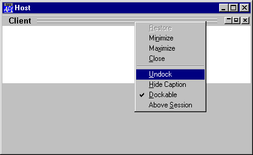
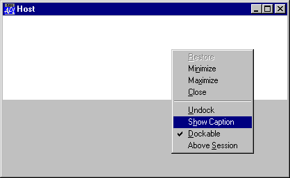

| Applies To: | Form | SubForm |
Description
The DockShowCaption property specifies whether or not a Form displays a title bar when it is docked as a SubForm.
DockShowCaption is a single number with the value 0 or 1 (the default).
The DockShowCaption property may be toggled on and off by the user from the object's context menu.
The first picture below illustrates a Form, docked as a SubForm, whose DockShowCaption property is 1, but is about to be set to 0.

The next picture shows the same docked Form with DockShowCaption set to 0.
